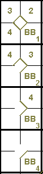

action { batter -> BB }

A Base on Balls is an award of first base granted to a batter who, during his time at bat, receives four pitches outside the strike zone [OBR Definition of Terms].
The batter becomes a runner and is entitled to first base without liability to be put out (provided he advances to and touches first base) when… four “balls” have been called by the umpire [OBR 5.05(b)(1)].
The official scorer shall score a base on balls whenever a batter is awarded first base because of four balls having been pitched outside the strike zone [OBR 9.14(a)].
The abbreviation to be used in the first base square is “BB”, followed by a number representing the cumulative number of bases on balls conceded by the same pitcher (as we saw for strikeouts). In the example 20 given here, this is the fourth base on balls conceded by the same pitcher.
In the Example 20: given here, this is the fourth base on balls conceded by the same pitcher.
| WBSC | Translation in the scoring tool | Tool |
|---|---|---|
|
|
/* The batter reaches the first base on 'base on balls' */ action { batter -> BB } |
 |
In the event of a change of pitcher, the count of bases on balls is restarted from one.
When a substituted pitcher returns to the pitcher’s mound, the first base on balls he allows will be given a number one higher than the count he had accumulated before he was replaced.
As has already been noted, a base on balls does not count as a time at bat.
When one or more players are forced to advance because of the award of a base on balls, their advances are recorded along with the batting order number of the batter who was awarded the base on balls.
NOTE: In this case, as in others we will see, the advance is noted down in the same way as an advance on a hit. We said previously that the number without parentheses was used to indicate that the runners advanced on a hit; we can now expand this by saying that the number without parentheses is used to indicate that the runners advanced because of the batter (who in this case forced them to advance).
Example 21:
he award of a base on balls to the batter (the third to the plate) forced the two runners on base to advance.
IMPORTANT: If the fourth ball hits the batter, the advance to first base is scored not as a base on balls but
as a “hit by pitch” [OBR 9.14(a)]. If, after having been awarded a base on balls, a batter refuses to advance to
first, the base on balls is not credited. The batter is called out and charged with a time at bat, as we have already
seen [OBR 9.14(c)].
| WBSC | Translation in the scoring tool | Tool |
|---|---|---|

|
/* The first batter reaches the first base on 'base on balls' */ action { batter -> BB } /* The second batter hits a ground ball toward the shortstop. The fielder makes a poor return. */ action { batter -> E6T , runner1 -> + } /* The third batter reaches the first base on 'base on balls' */ action { batter -> BB , runner1 -> + , runner2 -> + } |

|